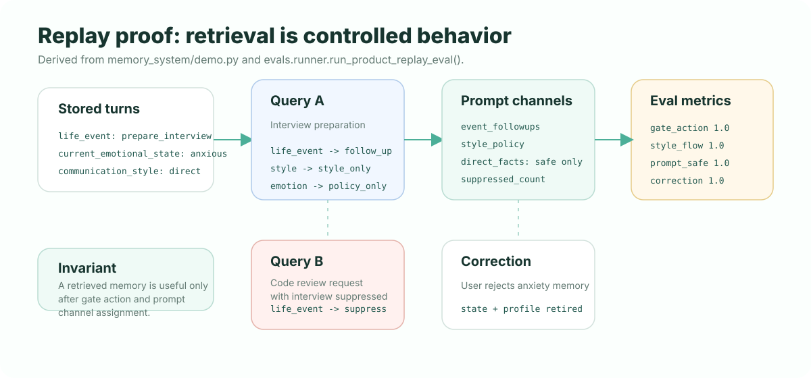

Adaptive Memory Runtime
EvolveMemory
Memory should make AI feel more natural, not more intrusive. EvolveMemory decides what to remember, what to retrieve, how to use it, and when to stay silent.
CItests + evals
Eval suites10 local
LLM ingestprovider-free
Gatepermissioned use
What makes it different?
EvolveMemory does not just inject retrieved facts into prompts. It turns memory into a control layer: direct use, style-only, follow-up, summarize-only, hidden constraint, clarify, or suppress. Retrieval is not permission.
LLM proposal ingest
The v2 ingest API accepts provider-free llm_payload proposals. They are validated, normalized, privacy-checked, and then routed through deterministic write governance before anything is stored.
extractor: "llm_payload"

Metrics that matter
| Metric | Question |
|---|---|
| gate_action_accuracy | Did expected memory-use actions match regression cases? |
| explicit_suppression_rate | Did a no-mention request suppress the matching event? |
| style_continuity_rate | Did preferences still shape answers without exposing facts? |
| prompt_safety_rate | Was direct visible memory omitted for the no-mention query? |
| correction_retirement_rate | Did correction retire sensitive state and derived profile memory? |
| extraction_eval | Did LLM payload validation normalize valid proposals and reject unsafe ones? |
| write_decision_eval | Did write governance choose create, review, supersede, or evidence-only correctly? |
| retrieval_privacy_eval | Did the gate suppress sensitive or non-promptable memory when needed? |
| v2_ingest_eval | Did API ingest route LLM payload candidates through deterministic governance? |